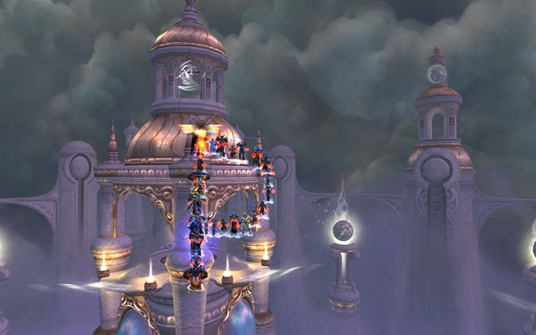
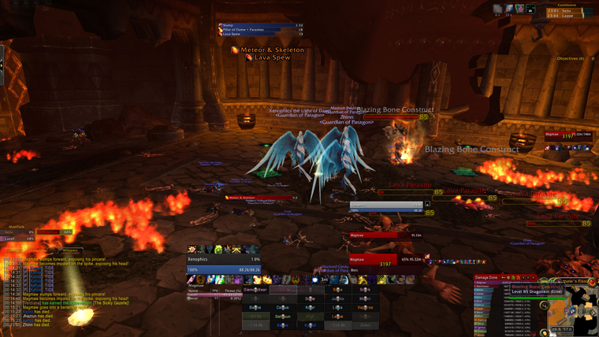
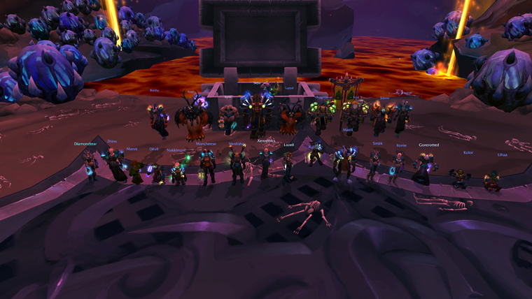
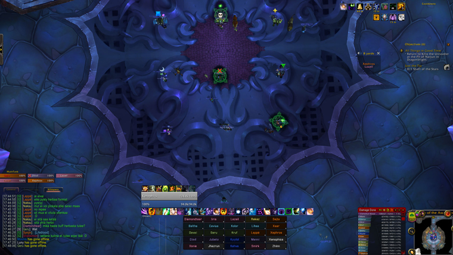

Paragon Age: Origins (Manaflask article)

After the recent progress cycle, Paragon have cemented themselves as the top guild and it looks as if they have no intention of giving up that spot any time soon. So we decided to talk to them a bit about what exactly it is that makes them different and why they've had such consistent success in this expansion and before.
We also had an in-depth discussion about raid stacking, alts and all that goes with that, and that article will be posted next week.
What was the concept behind the guild, the founders, what exactly it was that made you decide to really be a top guild?
Rakez: The idea behind Paragon was always to create a guild that would be 100% Finnish and also be able to compete in the top tier of raiding. We, the founders (Seita, Lazeil, Taistelija, Baltha and myself), were certain that by combining the core players of the two most successful Finnish guilds, Sauna and Knockout, the resulting group could prove to be a serious contender in the raiding scene. When the idea surfaced, Sauna was ridden with problems caused by unreliable member activity and overall bad atmosphere, so it did not require much thought to go along with a merger that seemed to ooze potential.
The early times, any specific difficulties or key moments from before you became a top guild or the top guild?
Rakez: We certainly had our share of problems. I don't think anyone expected the first tier to be such a boring grind that would last for the first six months of the WOTLK era. First kills of most bosses were taken during the first week, and not many guilds even thought of the tier as being a race of any kind. Some of our members started to lose interest in the game after a few months and we started noticing that not everyone was performing up to our standards.
By the time Ulduar was out, our nearly 40 man roster had shrunk significantly, and having under 30 players (of which not everyone was able to keep up 100% attendance) certainly isn't a situation in which you want to be as a 25 man raiding guild. This often forced us to skip raid days completely as we simply did not have enough players to do anything worthwhile. Thankfully it was around this time that a number of players from Underground Kosmonavts showed interest in reinforcing our ranks and pushing us from being just another top 10 guild to truly a potential candidate for world first kills.
What can you tell us about the difficulties and advantages of setting up an all Finnish guild?
Rakez: Having good communication is one of the most important aspects of raiding. We feel that being a finnish-only guild is a major advantage over the international guilds. While this roster might lead to a chaotic ventrilo or teamspeak atmosphere, it's still always better to have people communicating with each other in voice-chat than having a silent channel where no-one is really brave enough to say something important when they really need to call stuff out.
Single nationality also means that our members live relatively close to each other and thus we are able to arrange different social activities other than just playing WoW. It allows us to become more tightly knit as a group, and it's always more fun to play with people you know more personally than just from the internet. These are the major reasons to why we never even thought of going international, not even during our roster problems.
Kruf: The main downside of limiting ourselves to be Finnish-speaking only is the limited player pool from which to recruit, while the main advantages are a much closely knit group of players in the guild and better communication during raids. It also lowers the bar for speaking up on voice chat, as people tend to be a bit shy about speaking a non-native language.
Did you ever consider making the guild international and open for non-Finnish speakers?
xenophics: As mentioned above: We haven’t ever considered this because we feel it’s part of the guild spirit to be able to communicate in Finnish with everyone. With this even the more shy members should have no problems opening their mouths in teamspeak and contributing. Also, Finland has so far provided excellent recruits so why change?

What do you think is the major difference between you and the other top guilds? What makes you so successful?
xenophics: That’s really hard to say because of the top guilds I’ve only played in Paragon. We have good members and leaders, and we have skilled people who are great at analyzing combat log data and turning those findings into working tactics. We also have a couple of guys adding timers to Bigwigs and making addons if we need them. I’d like to say that we are really great at not standing in fire, but that’s unfortunately not entirely true. Individuals make mistakes but the sum of the talent has so far been greater than the mistakes.
If you've played any of the older MMOs, compare them a bit with WoW and how the whole game feels and what the community around it is.
Kruf: I used to play Dark Age of Camelot for many years before I started playing WoW, and while obviously WoW has improved many things compared to an older game, there are things I miss from DAoC, mainly the game mechanics were somewhat more complex, especially threat mechanics and melee ability chaining. I also liked the non-instanced raiding and PvP, as that made the game somewhat less centered around your guild only, but obviously that did have some major downsides aswell.
The communities don’t actually differ that much; there were just about as many trolls and just generally obnoxious people back then as there are now - in fact I remember many of the flame wars on forums back then being much worse than what we’ve seen on WoW forums recently.
What are your thoughts on the community of people that follow the WF race closely, specifically the level of discussion and fanboyism that surrounds top guilds? What would be the things you'd like to change about the overall tone and way they talk to each other and about the guilds?
xenophics: This is something we feel really strongly about and thus tried to do our part to not add fuel to the fire. In our opinion is quite impossible to stop trolls from trolling, but there are just so many other clueless people out there. We’ve tired to change it by respecting others in turn, but it doesn’t seem to work. It’s sad that this community is all about flamewars, accusing others and attacking people. It also feels like it’s hard to even talk about some things without getting attacked with the “guild-x fanboy” argument.
I guess heavier moderation (with obvious trolls) might help in some situations. People should also check their facts, there are so many baseless rumors floating around that they become the reality to some people. Arx actually tried to post to mmo-champion and tell some facts about us but people didn’t believe him as he only had 2 posts.
I can see no light at the end of the tunnel since the change should happen in the community people themselves. I guess there are just so many people out there who like arguing.
Was there any rivalry between you and some other guild in the WF race and why?
xenophics: Not openly. We have our own opinions about guilds and individuals playing in them but we don’t think they are something that should be discussed in the public. There has been some misunderstandings we’ve been able to clear out by talking to players from other guilds and got some great contacts that way. We believe respect between guilds is the way to go rather than rivalry. Overall we enjoy competing with the top guilds.
Kruf: Friendly rivalry is fine, but I strongly dislike trashtalking others in public.
Do you think it's even possible to completely dominate the race nowadays as it was before (as in getting all the WF in an instance for example)?
xenophics: Hard to say completely, but I think we could have, for instance, done a better job at around 2-3 bosses. If the instance is linear it’s easier, but getting all... doubt it. There are many great guilds out there, as the progress in this tier showed again.
How difficult is it, and how much pressure does it impose on you be be considered the top guild and then having to live up to that and prove that you are (as you did)? Does it in any way change the way you play or approach the game?
xenophics: We’ve always played because we think it’s fun and we want to be as good at it as possible. This fact remains the same no matter how good we did progress-wise. Still it of course it makes us (or at least me) feel extra uneasy during the progress. We know it’s not the end of the world to lose world firsts, but we still work really hard to not end up in such situations.

Are you still enjoying WoW and why?
xenophics: I wouldn’t play if I didn’t enjoy WoW. I really like the guild and the people we have in it. Getting to meet them every now and then in real life means a lot to me; we have a lot of fun together. Progress raiding is another reason I play. This time it took ages and I can openly admit that I’m nearly burned out with WoW, but it doesn’t matter as it takes some time before the next tier content anyway. All our members know what the progress cycle is like in this game, and they know when to take it easy to be able to come back progress hungry when the time is right.
Also, I gotta admit that I like collecting achievements and mounts and they kept me busy in Wotlk. Let’s see if I start grinding me drakes when I feel like playing again. :)
Ps. Leveling is super fun again, and I’ve been busy with my Protection Paladin alt for the last 4 days.
Your thoughts on starting raids early in the day?
Kruf: Obviously sucks for me, as I have a full time job, but if that’s what it takes to get world firsts, that’s what we’ll do and I’ll just try my best to cope with it.
Your thoughts on beta testing all the raid bosses?
xenophics: The less we get to test on PTRs, the better I’d say. A lot of the fun comes from being able to get to a completely new boss first and start figuring out the abilites, tactics and everything. In this tier 12/13 bosses were tested on PTR and the instances stayed open for weeks. The content felt a bit old already on launch. On the other hand, I prefer less bugging “old” bosses to buggy new bosses.
Are you going to be going just as hard at the next raid content as you have so far?
Kruf: Yes, of course. Now that the competition for firsts is tougher than it was in ICC we’re definitely going all out on next raid tier aswell.
Several guilds mentioned the old gating system as a solution to the insane amounts of time required for raiding nowadays, what are your thoughts on that?
xenophics: Hard to say. Gating gives advantage to US guilds as they get to start earlier so we aren’t big fans of it. Tho, if the difficulty level we saw in this tier stayed the same in the future ones I guess I’d take gating rather than 1,5 months grind.
Some kind of attunement system wouldn’t hurt if you had multiple instances to choose from. For instance, you could only start with Blackwing Descent and killing Nefarian opens Throne of the four winds. Of course you’d need to re-think the encounter balance in that case, but in my eyes the fact that you had so many bosses to choose from made the grind even more stressful. I also think that being able to do a boss on normal mode and put back heroic was poor design. Getting **** blocked on a boss might frustrate but might also make you raid less (in some cases). Anyway, these are just my thoughts. In all honesty, I don’t think there is any easy answer to this problem. Blizzard has tried many things but we haven’t really been entirely happy even once, have we?

- Log in to post comments